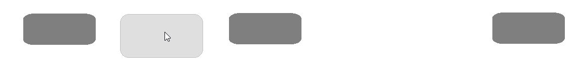

A legelső tervek még nagyon egyszerűek voltak, ekkor még egyszínű hátteret, statikus navigációs sávot meg a legegyszerűbb egy-oszlopos képsorozatot képzeltem el. Aztán elég hamar rájöttem, hogy így elég sivár az oldal.
Sorrendben elöször egy navigációs sávot készítettem el, ami minden oldalon azonos elrendezésű és kinézetű. Az oldalakat két csoportra akartam osztani, a feladatban kért 3+1 oldal szerint. Volt egy olyan elképzelésem, hogy legyen valami effekt ami kiemel egy gombot a látható módon.
Ez a megoldás azonban a képernyő szűkítésével nincs baráti viszonyban, ha nem férnek el egyszerűen egy sorral lejjebb kerül a gomb, amitől vibrálni fog, hiszen ezzel már nem lesz rajta a kurzor így visszaállna.
Ezt nem tudtam sehogy kiküszöbölni, ezért egyszerűen ez az effekt ki van kapcsolva egy szélesség alatt.
A főoldal elkészítésével egyidőben csináltam meg a végleges elrendeződést és a láblécet az alábbi szerint:
A "Munkáim" oldalnál egy olyan aprócska problémába ütköztem, hogy még nincsen sok olyan színvonalas kreálmányom, amit bemutathatnék. Ezt orvosolva loptam szereztem a netről. Ezeknél a képek mind a forrásra mutatnak.
Az egyik első ötletem ehhez az oldalhoz az volt, hogy egy GIF-szerű animált képet csináljak. Ezt úgy képzeltem el, hogy csak akkor aktív, ha a kurzort rávisszük.
Ezt 'video' formátumban sikerült megcsinálni, egy kis JS segítségével.